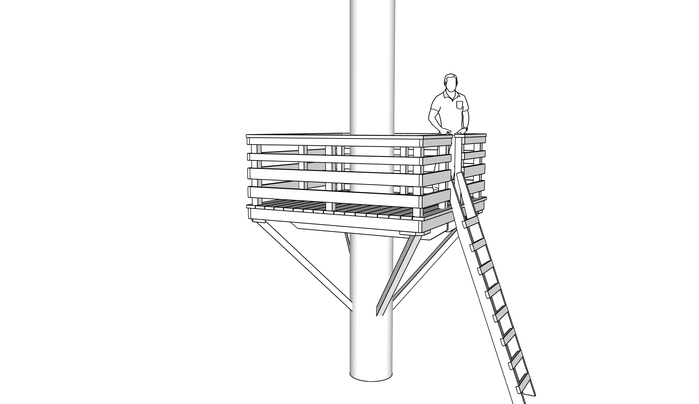
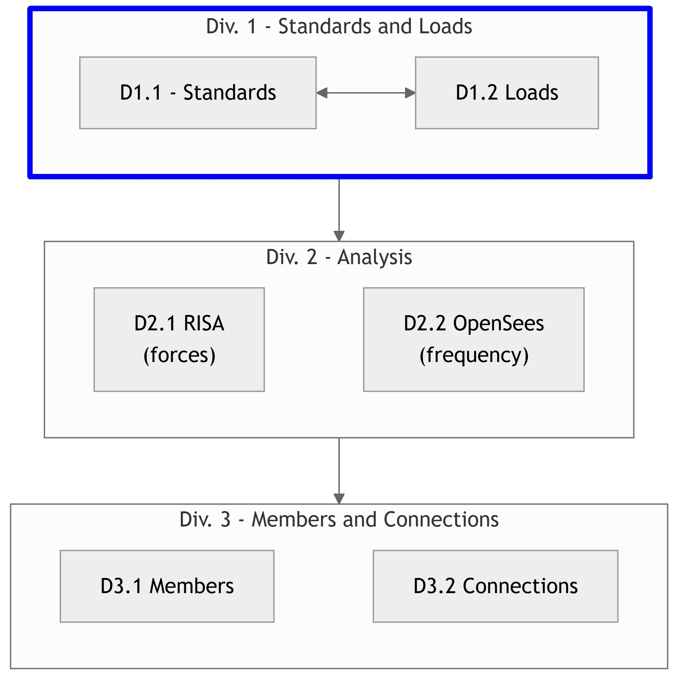

1.0 | Report Summary#
This report covers the structural design of a tree fort in Novato, California, following the California Building Code (CBC). The fort is supported by a mature tree with a 24-inch diameter trunk.
The report illustrates the use of tags, commands and scripts including:
a rivt-report.py script that assembles the report.
shell commands that run an < external program > .
external urls and section links between documents.
various forms of math symbols.
external function importing and processing.
the use of AI in preparing
{kind=link}

Fig. 1 - Tree Fort#
1.0 - 2 | Design Sections#
The design report is organized into the following sections:
{kind=link}

Fig. 2 - Report Flow Chart#
1.0 - 3 | Drawing Symbols#
Table 1: Drawing Abbreviations
Abbreviation |
Definition |
|---|---|
ASD |
Allowable Stress Design |
ACI |
American Concrete Institute |
AISC |
American Institute of Steel Construction |
AISI |
American Iron and Steel Institute |
ASTM |
American Society for Testing and Materials |
AWS |
American Welding Society |
AB |
Anchor Bolt |
BDRY |
Boundry |
CBC |
Califiornia Building Code |
CRC |
Califiornia Residential Code |
CIP |
Cast-In-Place |
CLR |
Clear |
CONC |
Concrete |
CMU |
Concrete Masonry Unit |
CRSI |
Concrete Reinforcing Steel Institute |
CONST JT |
Construction Joint |
CONT |
Continuous |
CJ |
Control Joint |
D-C |
Demand-Capacity (ratio) |
DIA |
Diameter |
DIM |
Dimension |
EA |
Each |
EF |
Each Face |
EJ |
Expansion Joint |
ES |
Each Side |
EW |
Each Way |
EXP Bolt |
Expansion Bolt |
EXP JT |
Expansion Joint |
FTG |
Footing |
FND |
Foundation |
GALV |
Galvanized |
GA |
Gauge |
GR |
Grade |
HT |
Height |
IN |
Inch |
ID |
Inside Diameter |
ICBO |
International Conference of Building Officials |
K |
Kip (1000 Pounds) |
LWC |
Light Weight Concrete |
LRFD |
Load and Resistance Factor Design |
NWC |
Normal Weight Concrete |
NIC |
Not in Contract |
OC |
On Center |
OD |
Outside Diameter |
OPNG |
Opening |
PVC |
Polyvinyl Chloride |
PSF |
Pounds per Square Foot |
PSI |
Pounds per Square Inch |
R |
Radius |
REINF |
Reinforced |
SIM |
Similar |
SOG |
Slab on Grade |
SL |
Splice Length |
SQ |
Square |
STD |
Standard |
SDI |
Steel Deck Institute |
SF |
Step Footing or Square Foot |
SYM |
Symmetrical |
THK |
Thick or Thickness |
T&B |
Top and Bottom |
T&G |
Tongue and Groove |
TOC |
Top of Concrete |
TOF |
Top of Foundation |
TOS |
Top of Steel |
TOW |
Top of Wall |
TYP |
Typical |
UNO |
Unless Noted Otherwise |
WWF |
Welded Wire Fabric |
W/ |
With |
WP |
Working Point |